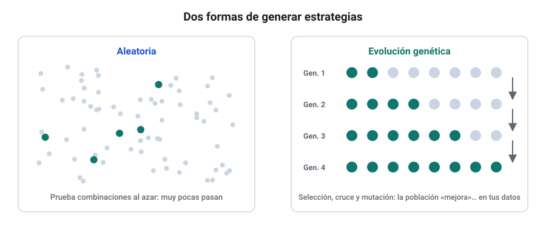
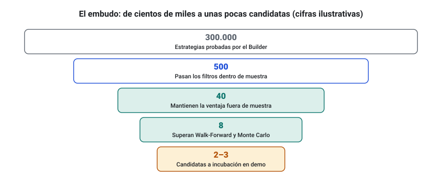
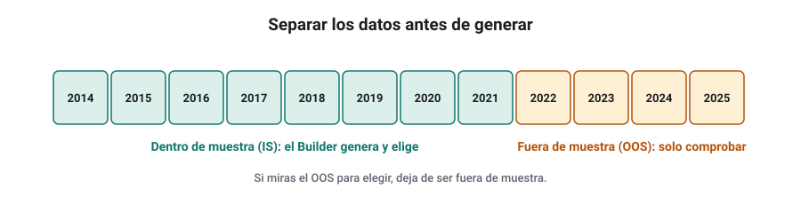
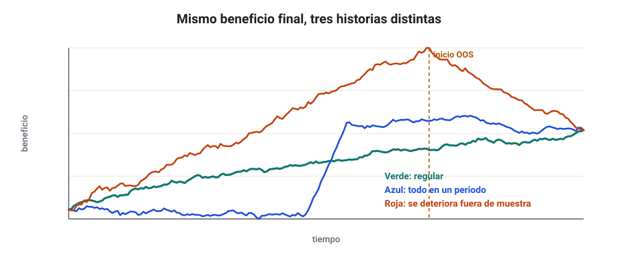

SEMANA 06 · ETAPA 2 · STRATEGYQUANT X
Primeras estrategias
Presentación de la semana
Con los datos preparados, esta semana generarás tus primeras estrategias. Aprenderás cómo las construye el Builder, qué piezas usa, cómo se gestionan las operaciones y el riesgo, cómo se filtran y ordenan los resultados y cómo leer el informe de una estrategia. Terminarás con tu primer proyecto completo en EUR/USD H1. Un aviso desde el principio: de lo que generes esta semana, casi nada servirá para operar. El objetivo es aprender la herramienta y entrenar el ojo, no encontrar ya una estrategia.
Objetivos
Al terminar la semana sabrás:
- Explicar cómo genera estrategias el Builder: de forma aleatoria y por evolución genética.
- Elegir bloques e indicadores y entender las condiciones de entrada y salida.
- Configurar la gestión de operaciones y el money management.
- Definir el ranking, los filtros y los databanks de un proyecto.
- Leer el informe de una estrategia: métricas, curva y lista de operaciones.
- Lanzar, vigilar y documentar un proyecto completo.
Plan de la semana (22–25 horas)
| Bloque | Horas | Qué harás |
|---|---|---|
| Clases | 6 | Seis lecciones: lectura y vídeos |
| Prácticas | 12 | Primer proyecto, análisis de resultados y ejercicios |
| Investigación y evaluación | 4 | Investigación I-06, entrega y examen |
| Revisión y planificación | 2 | Glosario, cuaderno y plan de la semana 7 |
Qué necesitas
- SQX con los datos de EUR/USD de la semana 5, alineados con tu broker.
- Tu ficha de datos (costes y zona horaria).
- Tu plantilla de métricas de la semana 4.
- Tiempo de ordenador: un proyecto puede estar varias horas generando. Planifica dejarlo funcionando de noche.
Criterio para desbloquear la semana 7
Tener en estado APROBADO, con un 80 % o más cada uno:
- ☐ Examen de la semana 6
- ☐ Entrega práctica: primer proyecto documentado y análisis de tres estrategias
- ☐ Investigación I-06: pasos 1 a 5, 7 y 8 documentados
Cómo genera el Builder: aleatoria y evolución genética
Formato: clase de 35 minutos · Lectura: 30 minutos
La idea
El Builder construye estrategias combinando piezas (indicadores, condiciones, tipos de orden, stops y objetivos) y las prueba una a una con tus datos. Las que cumplen tus filtros se guardan; las demás se descartan. Puede hacerlo de dos formas.
Generación aleatoria
En el modo aleatorio (random generation), cada estrategia se construye eligiendo piezas al azar dentro de lo que permites. Ventajas: explora mucho espacio y no se «encariña» con ninguna idea. Inconveniente: la mayoría de las combinaciones son malas, así que necesita muchas pruebas para encontrar algo que pase los filtros.
Evolución genética
En el modo genético (genetic evolution), el Builder imita la selección natural:
- Crea una población inicial de estrategias aleatorias.
- Las evalúa y las ordena por una medida de calidad (el fitness).
- Las mejores se cruzan (crossover), combinando partes de dos estrategias, y algunas mutan (mutation), cambiando una pieza al azar.
- Se repite durante varias generaciones.
Para evitar que toda la población acabe siendo variaciones de una misma estrategia, el Builder puede usar varias islas que evolucionan por separado e intercambian de vez en cuando algunos individuos.

Cuántas estrategias son «muchas»
Un proyecto normal prueba decenas o cientos de miles de estrategias. Recuerda el sesgo de selección de la semana 4: si pruebas 100.000 estrategias, encontrarás cientos que «funcionan» por casualidad. Por eso el Builder es solo el primer filtro de un embudo muy estrecho.

Comprueba que lo has entendido
- ¿Qué diferencia hay entre cruce y mutación?
- ¿Para qué sirven las islas?
- ¿Por qué la evolución genética aumenta el riesgo de sobreajuste?
Bloques e indicadores; condiciones de entrada y salida
Formato: clase de 40 minutos · Lectura: 35 minutos
Los bloques
Los bloques (building blocks) son las piezas con las que el Builder construye. Se agrupan en:
- Indicadores: medias móviles, RSI, ATR, Bandas de Bollinger, MACD, estocástico, ADX y muchos más.
- Valores de precio: apertura, máximo, mínimo y cierre de velas anteriores, máximos y mínimos de N velas.
- Comparaciones y señales: «es mayor que», «cruza por encima», «sube durante N velas».
- Tipos de orden de entrada: a mercado, stop o límite.
- Salidas: stop loss, take profit, trailing stop, salida tras N velas y salidas por condición.
En el Builder decides qué bloques puede usar el programa. Menos bloques = menos combinaciones = menos sobreajuste, pero también menos posibilidades.
Una regla de entrada
Una regla de entrada combina condiciones con «Y» (AND) u «O» (OR). Por ejemplo:
Cada condición tiene parámetros (50, 14, 0,5…). El Builder los elige y los ajusta. Cuantos más parámetros tiene una estrategia, más grados de libertad tiene para adaptarse a los datos, y más fácil es que se adapte al ruido (semana 10).
Tipos de orden de entrada
| Tipo | Cuándo entra | Lógica habitual |
|---|---|---|
| A mercado | Al cumplirse la condición, en la siguiente vela | Cualquiera |
| Stop | Si el precio llega a un nivel por encima (compra) o por debajo (venta) | Ruptura y tendencia |
| Límite | Si el precio vuelve a un nivel mejor | Reversión |
Las salidas
Las salidas deciden tanto como las entradas. Las más usadas:
- Stop loss: fijo en pips, en múltiplos del ATR o en un nivel del precio. El ATR adapta el stop a la volatilidad.
- Take profit: objetivo de beneficio, con las mismas opciones.
- Trailing stop: se mueve a favor cuando el precio avanza.
- Salida temporal: cerrar tras N velas o al final del día o de la semana.
- Salida por condición: cerrar cuando se cumple una regla, por ejemplo un cruce contrario.
Comprueba que lo has entendido
- Escribe una regla de entrada con dos condiciones y un tipo de orden.
- ¿Por qué reducir los bloques disponibles ayuda contra el sobreajuste?
- ¿Qué ventaja tiene un stop en múltiplos del ATR frente a uno fijo en pips?
Gestión de operaciones, reglas y money management
Formato: clase de 35 minutos · Lectura: 30 minutos
Opciones de trading
Además de las reglas que genera el Builder, puedes imponer opciones de trading comunes a todas las estrategias del proyecto. Las más útiles:
- Limitar el horario: operar solo en ciertas horas (recuerda alinear la zona horaria).
- Cerrar al final del día o del viernes: evita mantener posiciones durante el fin de semana y sus gaps.
- Número máximo de operaciones por día.
- Stop loss y take profit mínimos y máximos: evitan estrategias con stops ridículamente pequeños (que el broker no permitiría o que se comerían los costes) o enormes.
El money management
El money management decide el tamaño de cada operación. En el Builder hay varios métodos; los dos esenciales:
| Método | Cómo calcula el tamaño | Cuándo usarlo |
|---|---|---|
| Tamaño fijo | Siempre los mismos lotes | Para generar y comparar estrategias |
| Riesgo fijo (% del capital) | Lotes según el capital y la distancia del stop | Para simular cómo crecería una cuenta real |
Capital inicial
Usa un capital inicial coherente con el tamaño: por ejemplo, 10.000 $ y 0,10 lotes. Así el drawdown en porcentaje tiene sentido. Lo importante no es la cifra, sino usar siempre la misma para poder comparar proyectos.
Comprueba que lo has entendido
- ¿Por qué conviene fijar un stop loss mínimo en pips?
- ¿Por qué se generan las estrategias con tamaño fijo?
- ¿Qué riesgo evitas cerrando las posiciones el viernes?
Ranking, filtros y databanks
Formato: clase de 35 minutos · Lectura: 30 minutos
Los filtros
Los filtros deciden qué estrategias se guardan en el databank. Unos filtros de partida razonables para H1:
| Filtro | Valor de partida | Por qué |
|---|---|---|
| Número de operaciones | ≥ 200 en el periodo de prueba | Muestra suficiente (semana 4) |
| Profit factor | ≥ 1,3 | Ventaja mínima tras costes |
| Drawdown máximo | Limitado a un valor razonable para el capital | Evita estrategias inaguantables |
| Ratio beneficio / drawdown | ≥ 2–3 | Rentabilidad respecto al dolor |
| Estabilidad | Positiva y alta | Curva regular, no un golpe de suerte |
No son números mágicos: son un punto de partida. En la investigación de esta semana comprobarás cómo cambian los resultados al endurecerlos.
El ranking y el fitness
En el modo genético, el fitness es la medida que el Builder intenta mejorar. Si eliges el beneficio neto, el Builder buscará beneficio a cualquier precio; si eliges una medida que combine beneficio, drawdown y estabilidad, buscará curvas más equilibradas. Elegir el fitness es elegir qué tipo de estrategia quieres.
Datos dentro y fuera de muestra
Desde este primer proyecto, reserva una parte de los datos que el Builder no use para elegir estrategias: el periodo fuera de muestra (out of sample, OOS). Por ejemplo, genera con 2014–2021 (dentro de muestra, in sample, IS) y guarda 2022 en adelante para comprobar. Una estrategia que solo funciona en el periodo IS es, casi seguro, un ajuste al ruido. Lo verás en profundidad en la semana 10.

Los databanks del proyecto
Un proyecto del Builder suele tener varios databanks: uno con los resultados que pasan los filtros y otros que puedes crear para separar candidatas. Desde el databank puedes ordenar por cualquier columna, añadir columnas de métricas y enviar estrategias al Retester.
Comprueba que lo has entendido
- ¿Qué pasaría si usaras el beneficio neto como único fitness?
- ¿Por qué se reserva un periodo fuera de muestra desde el primer proyecto?
- Tu databank sale vacío. ¿Qué haces?
Leer un resultado: pestañas, métricas y curva
Formato: clase de 40 minutos · Lectura: 35 minutos
El informe de una estrategia
Al abrir una estrategia del databank, SQX muestra un informe con varias secciones: resumen de métricas, curva de capital, lista de operaciones, estadísticas por meses o años y las reglas de la estrategia (en pseudocódigo legible). Revísalas siempre en este orden:
- Las reglas. ¿Entiendes qué hace? ¿Tiene sentido? Una estrategia con 9 condiciones y parámetros raros es sospechosa.
- El número de operaciones. Por debajo de 200 en H1, desconfía.
- La curva de capital. ¿Sube de forma regular o depende de un periodo concreto?
- IS frente a OOS. ¿Mantiene el comportamiento en el periodo fuera de muestra?
- Las métricas. Profit factor, drawdown, ratio beneficio/drawdown, esperanza, tasa de acierto y R.
- La distribución en el tiempo. ¿Gana en la mayoría de los años o solo en uno?

Señales de alarma
- Un profit factor muy alto (por encima de 3) con pocas operaciones.
- Una curva casi perfecta, sin ningún drawdown.
- Casi todo el beneficio en unas pocas operaciones o en un solo año.
- Un comportamiento muy distinto entre IS y OOS.
- Stops o take profits de pocos pips, en los que los costes deciden el resultado.
Comprueba que lo has entendido
- ¿En qué orden revisas el informe de una estrategia y por qué empiezas por las reglas?
- Nombra tres señales de alarma.
- Una estrategia gana todo su beneficio en 2020. ¿Qué piensas?
Taller: primer proyecto en EUR/USD H1
Formato: taller guiado de 60 minutos · Práctica: 6–8 horas, con generación nocturna
Paso 1 · Crea el proyecto
En el Builder, crea un proyecto nuevo y llámalo S06_EURUSD_H1_v1. Anota en tu cuaderno la fecha, la build de SQX y el objetivo: «aprender el flujo del Builder con una configuración estándar».
Paso 2 · Qué construir
- Tipo de estrategia: simple, con lógica de entrada en largo y en corto simétrica.
- Modo: evolución genética con islas (deja los valores por defecto la primera vez y anótalos).
- Temporalidad: H1.
Paso 3 · Datos
- Símbolo EURUSD de la semana 5, en la zona horaria de tu broker.
- Periodo IS: de 2014 al final de 2021. Periodo OOS: de 2022 hasta el último dato.
- Precisión del backtest: la de datos M1 que tengas disponible.
- Costes: los de tu ficha de datos, algo pesimistas.
Paso 4 · Bloques, opciones y money management
- Bloques: deja los indicadores por defecto, pero activa solo órdenes a mercado y stop.
- Obligatorio un stop loss; stop mínimo de 15 pips.
- Cerrar posiciones el viernes antes del cierre.
- Money management: tamaño fijo de 0,10 lotes con un capital de 10.000 $.
Paso 5 · Filtros y ranking
Usa los filtros de partida de la lección 4, aplicados al periodo IS. Como fitness, usa una medida que combine beneficio y drawdown o la estabilidad.
Paso 6 · Lanza y vigila
Lanza el proyecto y déjalo al menos 4–6 horas. Anota cuántas estrategias ha probado y cuántas han pasado los filtros.
Paso 7 · Analiza tres estrategias
Elige tres estrategias del databank: la primera por tu fitness, una al azar y la que te parezca más sencilla. Para cada una, rellena en tu plantilla de métricas los datos IS y OOS y escribe un párrafo de abogado del diablo.
Comprueba que lo has entendido
- ¿Cuántas estrategias probó tu proyecto y cuántas pasaron los filtros? ¿Qué porcentaje es?
- ¿Cuántas de tus tres estrategias mantuvieron un profit factor ≥ 1,2 fuera de muestra?
- ¿Qué cambiarías en la configuración para el siguiente proyecto?
Glosario de la semana
| Término | Inglés | Definición |
|---|---|---|
| Bloques | Building blocks | Piezas con las que el Builder construye estrategias |
| Condición | Condition | Comparación que debe cumplirse para entrar o salir |
| Cruce (genético) | Crossover | Combinación de partes de dos estrategias para crear una nueva |
| Dentro de muestra | In sample (IS) | Datos que se usan para construir o elegir la estrategia |
| Evolución genética | Genetic evolution | Generación que mejora una población de estrategias por selección, cruce y mutación |
| Filtro | Filter | Requisito que una estrategia debe cumplir para guardarse |
| Fitness | Fitness | Medida de calidad que la evolución genética intenta mejorar |
| Fuera de muestra | Out of sample (OOS) | Datos reservados que no se usan para construir ni elegir |
| Generación | Generation | Cada ciclo de la evolución genética |
| Generación aleatoria | Random generation | Construcción de estrategias eligiendo piezas al azar |
| Grados de libertad | Degrees of freedom | Número de parámetros y decisiones que puede ajustar una estrategia |
| Isla | Island | Población que evoluciona por separado dentro de un proyecto genético |
| Money management | Money management | Método que decide el tamaño de cada operación |
| Mutación | Mutation | Cambio aleatorio de una pieza de una estrategia |
| Población | Population | Conjunto de estrategias de cada generación |
| Salida temporal | Time exit | Cierre de la operación tras un número de velas o a una hora |
| Sobreajuste | Overfitting | Adaptación de una estrategia al ruido de los datos históricos |
| Tamaño fijo | Fixed size | Mismo número de lotes en todas las operaciones |
| Trailing stop | Trailing stop | Stop que se mueve a favor cuando el precio avanza |
Ejercicios obligatorios
E1 · Genética. Explica con un ejemplo inventado cómo dos estrategias «padres» podrían cruzarse para dar una «hija», y cómo podría mutar esa hija.
E2 · Sesgo de selección. Si el Builder prueba 200.000 estrategias y una de cada 2.000 pasa los filtros por pura casualidad, ¿cuántas estrategias «falsas» tendrás en el databank?
E3 · Reglas. Escribe en lenguaje normal dos reglas de entrada: una de ruptura con orden stop y otra de reversión con orden límite, con su stop loss y su take profit.
E4 · Grados de libertad. Cuenta los parámetros de esta estrategia: «Comprar si la EMA(20) cruza por encima de la EMA(80) y el ADX(14) > 25; stop de 2 × ATR(14); take profit de 3 × ATR(14); salir tras 30 velas».
E5 · Tamaño fijo frente a riesgo fijo. Explica en 100 palabras por qué comparar dos estrategias con riesgo porcentual puede ser engañoso.
E6 · Filtros. Propón filtros para una estrategia D1 de EUR/USD con 10 años de datos. ¿Cuántas operaciones mínimas pedirías y por qué?
E7 · División de datos. Con datos de 2014 a 2025, propón dos formas distintas de separar IS y OOS y explica una ventaja de cada una.
E8 · Lectura de un informe. Una estrategia tiene: 160 operaciones, profit factor 3,4, drawdown 2 %, tasa de acierto 81 %, stop medio de 60 pips y take profit medio de 12 pips. Enumera todas las señales de alarma que encuentres.
E9 · Costes. Una estrategia tiene un take profit de 8 pips y un stop de 8 pips, y paga 1,2 pips de coste por operación. Calcula su tasa de acierto de equilibrio.
E10 · Diario del proyecto. Escribe la entrada de tu cuaderno del taller: configuración completa, resultados y qué cambiarías.
Investigación I-06 y entrega práctica
Investigación I-06 · ¿Endurecer los filtros mejora el comportamiento fuera de muestra?
Esta semana añades el paso 5: generar estrategias.
Paso 1 · Hipótesis. Ejemplo: «Las estrategias que pasan filtros más estrictos en IS (profit factor ≥ 1,5 y estabilidad alta) mantienen un profit factor fuera de muestra mayor que las que pasan los filtros de partida».
Paso 2 · Fuentes. Cita al menos una fuente sobre sobreajuste o selección de estrategias generadas (documentación de StrategyQuant, un libro o un artículo).
Paso 3 · Datos. Los del taller: EUR/USD H1, IS 2014–2021, OOS 2022 en adelante.
Paso 4 · Diseño del experimento. Define antes de generar: los dos conjuntos de filtros, cuántas estrategias analizarás de cada grupo (al menos 20), cómo las elegirás (las 20 primeras por fitness, por ejemplo) y qué métrica OOS compararás.
Paso 5 · Generación. Usa el proyecto del taller con los filtros de partida y crea un databank o una vista con los filtros estrictos. Exporta las métricas IS y OOS de ambos grupos a tu hoja.
Paso 7 · Comparación. Compara la media y la mediana del profit factor OOS de los dos grupos, y el porcentaje de estrategias de cada grupo con profit factor OOS mayor que 1.
Paso 8 · Conclusiones. ¿Se confirma la hipótesis? ¿Qué porcentaje de estrategias «buenas» en IS lo siguieron siendo en OOS? ¿Qué te dice eso sobre el Builder?
Entrega práctica · Primer proyecto documentado
Qué entregar
| Archivo | Contenido |
|---|---|
CODIGO_S06_ENT |
Documento con la configuración completa del proyecto (capturas de cada pestaña), estrategias probadas y guardadas, y el análisis de las tres estrategias con sus métricas IS y OOS |
CODIGO_S06_SQX |
El archivo del proyecto o de las tres estrategias exportadas desde SQX |
CODIGO_S06_INV |
Hoja de la investigación I-06 |
| Ejercicios | E1 a E10 |
Cómo se evaluará
Se valora que la configuración sea reproducible, que los costes y la zona horaria sean los de tu ficha y que el análisis sea crítico. No se valora encontrar una estrategia rentable: se valora saber explicar por qué no te fiarías de ella.
Examen de la semana 6 · Variante A
Tiempo orientativo: 60 minutos · Puntuación: 100 puntos · Aprobado: 80 puntos · Puedes usar calculadora, pero no el material del curso ni el tutor de IA. Si suspendes, repetirás con otra variante.
Parte A · Opción múltiple (30 puntos, 2 por pregunta)
Parte B · Cálculo (45 puntos, 15 por ejercicio)
B1. Un proyecto probó 350.000 estrategias y guardó 420. a) ¿Qué porcentaje pasó los filtros? b) Si de las 420, 30 mantienen un profit factor ≥ 1,2 fuera de muestra, ¿qué porcentaje de las guardadas es eso, y qué porcentaje de las probadas?
B2. Una estrategia tiene en IS 400 operaciones con profit factor 1,6, y en OOS 90 operaciones con beneficio bruto 2.100 $ y pérdida bruta 1.900 $. a) Calcula el profit factor OOS. b) ¿Cuánto ha caído respecto al IS en porcentaje? c) ¿Te parece suficiente la muestra OOS? Justifícalo con la semana 4.
B3. Una estrategia tiene un take profit medio de 25 pips, un stop medio de 18 pips y paga 1,5 pips de coste. a) Calcula el ratio R después de costes. b) Calcula la tasa de acierto de equilibrio. c) Si acierta el 44 %, ¿cuál es su esperanza en pips por operación?
Parte C · Razonamiento (25 puntos)
En un máximo de 250 palabras: tu primer proyecto ha encontrado una estrategia con una curva IS casi perfecta (profit factor 2,8, 230 operaciones), pero en OOS pierde dinero. Explica las causas más probables y qué cambiarías en el siguiente proyecto.